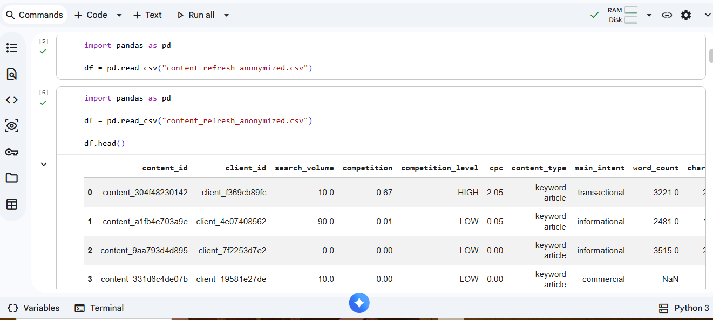

AI/ML Student Portfolio
I am learning Artificial Intelligence and Machine Learning through the FlyRank AI Internship. My portfolio contains the projects I completed during the internship.
Built a Machine Learning pipeline to analyze content performance and identify pages that need improvement or refresh.
Problem:
Analyze website content performance and identify pages that need improvement,
refresh, or monitoring.
Dataset:
Used an anonymized content performance dataset containing SEO and engagement
metrics such as impressions, clicks, CTR, engagement rate, and content age.
Approach:
Performed data analysis, signal auditing, feature analysis, and built a machine
learning pipeline to classify content actions.
Model:
Used Python, Pandas, Scikit-learn, and machine learning techniques to analyze
patterns and create recommendations.
Result:
Created a system that identifies content pages and recommends actions:
Improve CTR, Refresh Content, or Monitor.
Loaded the anonymized content performance dataset using
Pandas and previewed the data with
df.head().
The dataset contains SEO metrics such as search volume,
competition, CPC, content type, and user intent.

Figure 1: Dataset preview from the FlyRank AI Fluency content performance project.
Created an AI project that predicts user mood from text input and recommends songs based on the predicted mood.
Problem:
Build an AI system that understands a user's mood from text input and suggests
songs matching that mood.
Dataset:
Used a text-based mood dataset containing sentences with mood labels such as
happy, sad, angry, stress, and calm.
Approach:
Converted text into numerical features using Natural Language Processing
techniques. The machine learning model predicts the user's mood from text.
Workflow:
User Text → Text Processing → ML Model → Mood Prediction → Song Recommendation
Result:
Created a recommendation system that predicts mood and suggests songs based on
the predicted emotional category.
GitHub: aqsaafzal483-cyber